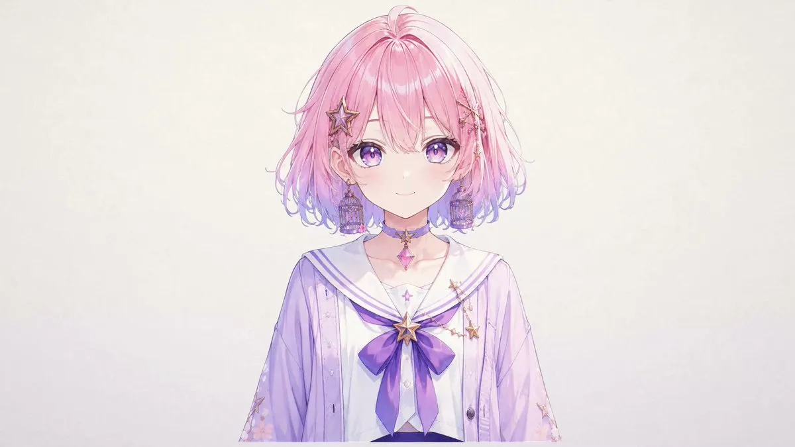

互动数据（2026-10-27 12:18 UTC+8，经 X API 读取）：约 7 万次浏览、1,101 赞、132 转帖、46 回复、1,364 收藏。
原帖照录
只要一张立绘，就能把心中的角色真正带到你身边。这正是我们一直想做的事。
她会眨眼、转头、变换神情，轻轻戳一下还会给你回应。视频里的每一个动作都由实机实时驱动，没有任何手K动画。
她叫若泉绮羽，是我们项目的看板娘，口头禅是「……不是这个。」
无需学习复杂的绑定，也不用手动拆分图层，只需放进一张立绘，TA 就能鲜活地动起来。这次先为大家展示半身效果，更多细节仍在持续打磨中。
我们并不打算喊出「颠覆 Live2D」这样的口号。距离它的高度，我们还有一段路要追赶；但今天，我们确实迈出了扎实的一大步。
特别感谢两个优秀的开源项目，是它们奠定了绮羽诞生的基础： · See-through（shitagaki-lab，@ljsabc 妈咪！）：将单张立绘拆分为图层 github.com/shitagaki-lab/… · Anime2.5DRig（8co28）：让拆分后的立绘在浏览器中动起来 github.com/852wa/Anime2.5… 在这两个项目的基础上，我们进行了大量的底层重构与改进。
演示配音由 GPT-SoVITS 合成，参考音源来自 あみたろの声素材工房（amitaro.net）。
项目将于近期公开。有任何想了解的，欢迎在评论区留言，我们会尽量回复。
#Live2D #立绘 #二次元 #原创角色 #OC #VTuber #虚拟主播 #插画 #动画 #动态立绘 #独立开发
作者在评论区的回复（照录）
- 问：付费还是开源？——“会以AGPLv3.0开源”
- 问：做了多久？——“差不多2个月左右☺️”
- 问：See-through 拆层还是只能 25 层吗？——“我们并没有突破上游项目的拆层层数限制 更多的是后处理”
- 问：相当于程序化掉骨骼、完全用视差图做动画？——“我们实际上是有使用骨骼的 不完全是视差”
- 问：复杂发型、大角度转头时穿模如何？——“目前我们这边还没有一个严谨的数据 但是可以分享的是穿模问题很看原图片的相关区域是怎么画的 但出现概率不算高”
- 问：语音能完全对上口型吗？——“能基本对齐的 放心～☺️”
- 评：抚摸、转动、表情自然度还有很大改进空间。——“是的 我们还在继续进行优化 谢谢你的支持☺️🙏”
- 另一位同样基于 See-through 做类似项目的开发者（hyperlogue/catchlight，目前只放出渲染运行时）留言，作者回：“面部转动这块确实我们花了很多时间和代价，现在我们正在处理一些稳定性 画风适配 以及生产效率上的问题”；对另一条提到他人同类项目的评论则说：“他做的很好 还很快 这也是为什么我们决定提前将我们的成果展示出来 我们原本是打算配套产品一起公开的”
这个项目是什么
从帖子和回复能确认的信息：
- 输入只有一张立绘：不需要画师预先分层，也不需要像 Live2D 那样手工做网格、变形器和物理。
- 流水线 = 自动拆层 + 自动绑定 + 实时驱动：拆层沿用 See-through 的模型（层数上限未突破，改进主要在后处理）；绑定和运行时以 Anime2.5DRig 为基础“大量底层重构”，并且用了骨骼，不只是视差。
- 效果：目前展示半身；眨眼、转头、表情切换、点击（“戳一下”）互动、口型基本对齐配音；作者自认离 Live2D 的水准“还有一段路”。
- 配音：演示用 GPT-SoVITS 合成，参考音来自 あみたろの声素材工房（免费声音素材站）。
- 状态：约 2 个月开发；“近期公开”，计划 AGPLv3.0 开源，原本打算与配套产品一起发布。项目名称尚未公布（看板娘名为若泉绮羽）。
两块基石
See-through：单张立绘 → 分层 PSD
圣方济各大学、宾大、Spellbrush、Shitagaki Lab 的研究（arXiv 2602.03749）。用扩散模型（基于 SDXL 的 LayerDiff 3D）生成补全遮挡部分的透明图层，配合动漫微调的 Marigold 伪深度估计推断绘制顺序，把一张图拆成最多 23 个语义层（头发、脸、眼睛、衣服、饰品等），输出分层 PSD。默认约需 12–16 GB 显存（1280 分辨率），有 8 GB 方案；HuggingFace 与魔搭有免费在线演示。作者明确说它不是“图转 Live2D”：拆层只是起点，绑定才是最费工的一步。
Anime2.5DRig：分层 PSD → 浏览器里自动绑定动起来
8co28（GitHub 852wa）的工具：把分层 PSD 拖进浏览器，自动完成网格分割、变形、物理设置，立刻带待机动作、眨眼、口型、头发物理动起来；转头是按图层深度做的“伪 3D”（视差 + 剪切），并有发束双弹簧物理；支持摄像头面部追踪（MediaPipe FaceMesh）、麦克风口型、透明 WebM 录制和 OBS 透明输出。图层命名直接兼容 See-through 的输出。在线演示。
核实与注记
- 层数：评论里说 See-through “只能 25 层”，README 写的是最多 23 个语义层（V3 模型）；作者回复只说没突破上游限制。
- “无手 K 动画、实机实时驱动”是作者自述，视频无法独立复现；项目代码尚未公开，暂无可验证的仓库。
- 许可：上游 See-through 为 Apache-2.0、Anime2.5DRig 为 MIT，都允许在 AGPLv3.0 项目中使用（需保留版权与许可声明）。See-through 的模型权重托管在 HuggingFace，权重许可以各模型页为准。Anime2.5DRig 自带的示例 PSD 画作版权归各自作者。
- 同方向的公开项目还有 catchlight（评论区提到），以及 See-through README 列出的 StretchyStudio、PNGAL、PachiPakuGen 等社区工具。
附录一：See-through README 全文中译
译自 shitagaki-lab/see-through README（2026-10-27 读取）。Copyright © shitagaki-lab 及论文作者，Apache License 2.0；本译文以同一许可发布，已作翻译修改。徽章、图片和视频链接从略，命令与代码保持原样。
展开 See-through README 译文
See-through：动漫角色的单图层分解
arXiv 2602.03749 · ACM 数字图书馆 · HuggingFace Space（PSD 推理演示）· 魔搭在线演示
Jian Lin¹、Chengze Li¹*、Haoyun Qin²³⁴、Kwun Wang Chan¹、Yanghua Jin³、Hanyuan Liu¹、Stephen Chun Wang Choy¹、Xueting Liu¹
¹圣方济各大学 ²宾夕法尼亚大学 ³Spellbrush ⁴Shitagaki Lab *通讯作者
发表于 ACM SIGGRAPH 2026 Conference Papers。
声明：本项目为开源研究项目，我们未开设任何付费服务。如遇到以此功能收费的网站，均与我们无关，请注意甄别。使用风险自负。
概要
我们提出一个框架，把静态的动漫插画自动转换为可操控的 2.5D 模型。我们的方法把单张图像分解为完整补全、语义各异、并推断出绘制顺序的图层——最多 23 层，包括头发、脸、眼睛、服装、饰品等。
（代表图；预告视频，点击播放。）
环境配置
# 1. 创建环境
conda create -n see_through python=3.12 -y
conda activate see_through
# 2. 安装 PyTorch（CUDA 12.8）
# aarch64 用户：下列固定版本可能不可用，请改用 torch>=2.9.0
pip install torch==2.8.0+cu128 torchvision==0.23.0+cu128 torchaudio==2.8.0+cu128 \
--index-url https://download.pytorch.org/whl/cu128
# AMD ROCm 用户：请安装与本地 ROCm 运行时匹配的 ROCm wheel。
# 例如 ROCm 7.2：
# pip install torch torchvision torchaudio \
# --index-url https://download.pytorch.org/whl/rocm7.2
# 3. 安装依赖（含常用工具和标注器）
pip install -r requirements.txt
# 4. 创建 assets 软链接（也可以直接把 assets 复制到根目录）
ln -sf common/assets assets可选标注器分级（按需安装）：
| 级别 | 命令 | 增加的功能 |
|---|---|---|
| 人体解析 | pip install --no-build-isolation -r requirements-inference-annotators.txt | detectron2，用于身体属性标注 |
| SAM2 | pip install --no-build-isolation -r requirements-inference-sam2.txt | SAM2，用于语言引导分割 |
| 实例分割 | pip install -r requirements-inference-mmdet.txt | mmcv/mmdet，用于动漫实例分割 |
注意：始终以仓库根目录为工作目录运行脚本。
脚本与模型
模型
| 模型 | HuggingFace 仓库 | 说明 |
|---|---|---|
| LayerDiff 3D | layerdifforg/seethroughv0.0.2_layerdiff3d | 基于扩散的透明图层生成（SDXL） |
| Marigold Depth | 24yearsold/seethroughv0.0.1_marigold | 针对动漫微调的伪深度估计 |
| SAM Body Parsing | 24yearsold/l2d_sam_iter2 | 语义身体部位分割 |
推理脚本
| 脚本 | 用途 |
|---|---|
inference/scripts/inference_psd.py | 主流程——端到端图层分解 → 输出 PSD |
inference/scripts/syn_data.py | 合成训练数据生成工具 |
其他推理 / 数据解析脚本请参阅代码库（
./inference/scripts/），详见各脚本的 docstring。
演示：inference/demo/bodypartseg_sam.ipynb——带可视化的交互式身体部位分割演示（19 个部位）。
完整身体标签的定义请参考
scrap_model.py（./common/live2d/scrap_model.py）。
在线演示
我们准备了一个使用 ZeroGPU 的 HuggingFace Space，注册 HuggingFace 后每天应能运行 1–2 次 PSD 提取（每次约 2–3 分钟，1280 分辨率）。
中国大陆用户可以使用魔搭社区 ModelScope 在线演示，目前完全免费，并且可以使用更高一点的分辨率。我们会持续维护这两个演示，确保全球用户都能使用。
（演示截图；版权归 Tohoku Zunko Project。）
使用方法
图层分解（主流程）
inference_psd.py 运行完整的 See-through 流程：用 LayerDiff 3D 模型生成透明图层，用微调过的 Marigold 模型推断伪深度，再把角色分层为最多 23 个语义层并导出分层 PSD。注意头部和身体的分离是两个连续阶段，耗时可能比论文中提到的原始模型更长。
# 把单张图像分解为分层 PSD
python inference/scripts/inference_psd.py \
--srcp assets/test_image.png \
--save_to_psd
# 处理一个图像目录
python inference/scripts/inference_psd.py \
--srcp path/to/image_folder/ \
--save_to_psd输出默认保存到 workspace/layerdiff_output/。每个结果包括：
- 一个按语义分离图层的
.psd文件 - 中间深度图和分割掩码
注意：这里使用的是我们最新的、23 层身体部位分离模型（V3）。
完成分层后，可以用 inference/scripts/heuristic_partseg.py 中的脚本对 PSD 进一步做基于深度或左右的分层。
# 按深度拆分
python inference/scripts/heuristic_partseg.py seg_wdepth --srcp workspace/test_samples_output/PV_0047_A0020.psd --target_tags handwear
#左右拆分
python inference/scripts/heuristic_partseg.py seg_wlr --srcp workspace/test_samples_output/PV_0047_A0020_wdepth.psd --target_tags handwear-1低显存用户
默认流程以 bf16 精度运行，1280 分辨率下约需 12–16 GB 显存。
12 GB 显卡：启用分组卸载（group offload），把 1280 分辨率下的峰值显存降到约 10 GB：
python inference/scripts/inference_psd.py \
--srcp assets/test_image.png \
--save_to_psd \
--group_offload8 GB 显卡：使用 NF4 量化流程（4 位量化权重），1280 分辨率下峰值约 8 GB，配合分组卸载降低分辨率还能再降：
# 安装 bitsandbytes（一次性）
pip install -r requirements-inference-bnb.txt
# 以 NF4 量化运行（默认：开启 group_offload，深度分辨率 720）
python inference/scripts/inference_psd_quantized.py \
--srcp assets/test_image.png \
--save_to_psd
# 想进一步降低显存，可把 layerdiff 分辨率降到 1024
python inference/scripts/inference_psd_quantized.py \
--srcp assets/test_image.png \
--save_to_psd \
--resolution 1024量化模型托管在 HuggingFace，首次运行时自动下载。质量接近全精度模型（相对 bf16 基线 PSNR 约 30 dB、SSIM 约 0.96）。
注意：分组卸载以速度换显存（约慢 1.5 倍）。NF4 量化的速度开销很小，但能减少模型权重占用的内存。
8 GB 显卡：块交换（block swap）流程在 1280 分辨率、bf16 精度下峰值约 8 GB：
python inference/scripts/inference_psd_blockswap.py \
--srcp assets/test_image.png \
--save_to_psd \准备训练数据集（如 Live2D 解析）
我们提供了一个单独的仓库，用于准备训练 Live2D 解析模型的数据集。请参考 CubismPartExtr（shitagaki-lab/CubismPartExtr）了解如何下载示例模型文件并准备工作区文件夹。之后参考 README_datapipeline.md，按说明运行数据解析脚本，准备用于检查和训练的数据集。
用户界面
数据准备好后就可以使用用户界面。启动方法见 UI Readme（ui/README.md）。
目前启动 UI 需要仓库根目录下的
workspace/datasets/文件夹，其中包含演示用的示例数据。我们以后会让这一点更灵活。建议安装
mmdet级依赖，以确保 UI 能成功启动。
训练
所有模型（LayerDiff、Marigold 深度、VAE、身体部位分割）的训练脚本都在 training/ 中，附配置和数据流程工具。我们的训练在 8 张 NVIDIA H200 上完成。
社区支持
欢迎社区贡献和第三方集成！如果你在本项目之上构建了工具、扩展或工作流，请开 issue 或 PR 告诉我们——我们很乐意在这里展示你的作品。
- ComfyUI-See-through（@jtydhr88）——ComfyUI 集成，节点式工作流，可在浏览器内导出 PSD。感谢这份出色的工作！
- PachiPakuGen（@kazuya-bros）——桌面工具，读取 See-Through 分解出的 PSD，为会说话角色动画工具 SpriTalk 生成动画素材（眨眼、口型）。工具和演示视频见其 Booth 页面！
- StretchyStudio——免费的浏览器内 2D 木偶动画工具，可自动绑定 See-through 分解出的 PSD 图层，弥合分解与可完整动画化角色之间的差距。直接把我们的 PSD 输出拖进去就能用。可看其 Reddit 帖子和在线编辑器。
- Anime2.5DRig（@8co28）——免费的浏览器内工具，拖入分层 PSD 的瞬间就把它变成会动的 2.5D VTuber 风格头像（眨眼、口型、头发物理）；它要求的图层命名遵循 See-through 的 PSD 约定，所以我们的输出基本开箱即用。可试在线演示并看发布推文！
- PNGAL（@1mm-module）——Windows 本地工具，把透明 PNG 变成可直接用于游戏的立绘动画：生成眼睛/嘴巴表情差分，用 See-through 拆成语义 PSD，再设置眨眼、口型和摇摆动作，导出 PSD、WebM、MP4、GIF 或精灵图。一键安装会把便携版 Python、固定版本的 ComfyUI、See-through 和所有所需模型装进一个自包含文件夹。工程很出色——感谢！
我们也在寻求本项目的国际化（i18n）帮助，非常感谢你的协助。
讨论：这是“图转 Live2D”吗？
我们认为不是——至少目前还不是。
虽然我们能从单张图像生成 2.5D 图层分解，但完整的“图转 Live2D”流程需要多得多的东西：
- 更精细的艺术化拆分。Live2D 模型需要按特定变形行为来设计图层。我们的自动分解优先保证语义正确，但 Live2D 画师为了让动作自然，会在如何拆层上做出不同的艺术选择。
- 绑定（Rigging）。分解之后，Live2D 模型还需要变形网格、物理参数和运动曲线——这个绑定过程可以说是最关键（也最费工）的一步，本项目并不涵盖。
- 艺术意图。专业 Live2D 作品是整体打造的：图层结构、补全画风和绑定是一起设计的。孤立地自动化其中一步无法复制这一点。
尽管如此，我们相信我们的分解能为 Live2D 画师提供一个有用的起点，省掉工作流中一些最繁琐的部分，例如手动分割和遮挡区域补全。
更新日志
2026-04-14：发布所有模型（LayerDiff、Marigold 深度、VAE、身体部位分割）的训练脚本、配置和数据流程。这是使用 23 个身体部位标签训练的 V3 模型。
2026-04-02：多项内存优化；为低显存用户增加建议（分组卸载、NF4 量化）。
致谢
本工作由中国香港特别行政区研究资助局的拨款资助并获得大力支持（项目编号 UGC/FDS11/E02/23）。
感谢以下人士的帮助与支持：
- Dingkun Yan 和 Xinrui Wang，为项目提供灵感与支持。
- 中国科学技术大学学生 ACG 社团“LEO”，慷慨提供了论文演示所用的示例 Live2D 模型文件。
这是一个开源研究项目。感谢以下项目的作者，让这项工作成为可能：
- LayerDiffuse——透明图像图层扩散（Lvmin Zhang 永远是传奇）
- Marigold——基于扩散的单目深度估计
- Segment Anything（SAM）——分割基础模型
- Grounding DINO——开放集目标检测
- LaMa——大面积掩码补全
- AnimeInstanceSegmentation——动漫专用实例分割
引用
如果你觉得这项工作有用，请引用：
@inproceedings{lin2026seethrough,
author={Lin, Jian and Li, Chengze and Qin, Haoyun and Chan, Kwun Wang and Jin, Yanghua and Liu, Hanyuan and Choy, Stephen Chun Wang and Liu, Xueting},
title={See-through: Single-image Layer Decomposition for Anime Characters},
booktitle={Proceedings of the Special Interest Group on Computer Graphics and Interactive Techniques Conference Conference Papers},
series={SIGGRAPH Conference Papers '26},
publisher={Association for Computing Machinery},
address={New York, NY, USA},
year={2026},
pages={1--11},
doi={10.1145/3799902.3811209},
url={https://doi.org/10.1145/3799902.3811209}
}附录二：Anime2.5DRig README 全文中译
译自 852wa/Anime2.5DRig README（日文原文，2026-10-27 读取）。Copyright © 8co28（852wa），MIT License；同梱的 ag-psd 为 MIT，MediaPipe FaceMesh 为 Apache-2.0。命令、文件名和图层名保持原样。
展开 Anime2.5DRig README 译文
Anime2.5DRig
演示：https://852wa.github.io/Anime2.5DRig/
只要把分好部件的 PSD 拖进浏览器，就会自动绑定（rigging）并动起来的 2.5D 头像工具。它把过去需要手工完成的设置（网格分割、变形、物理设置）自动化。无需安装，所有处理都在客户端完成。
演示 / 使用方法
- 把本仓库用 GitHub Pages 发布（Settings → Pages → Branch: main / root），或者在本地运行：
（python obs_server.py # → http://127.0.0.1:8000python -m http.server 8000也能运行。如需 OBS 联动，请使用obs_server.py。） - 打开页面，拖入分部件 PSD，或选择“读取示例 A”“读取示例 B”。A 是
sample2.psd，B 是sample.psd。读取后也可随时通过左上角的“示例 A”“示例 B”切换。 - 自动绑定开始运行，角色当场带着待机动作、眨眼、口型、头发物理动起来。
v2.0 新功能
- 强化 OBS 联动：在普通浏览器中打开的 PSD、调整、表情、锚点会自动同步到 OBS 的浏览器源（不再固定为
sample.psd）。 - 强化面部追踪：左右眼分别眨眼（眨单眼）、眉毛、笑容追踪，正面校准，灵敏度与平滑度调整，摄像头画面预览。追踪库（MediaPipe FaceMesh）以固定版本同梱，离线也能运行。
- 锚点编辑模式：在预览上拖动修正脸、眼、闭眼位置、嘴、脖子、胸部的基准点。
- 视频导出：以原 PSD 尺寸录制透明 WebM（或 MP4）动作视频。
- 易用性：撤销/重做、按键切换表情、预览缩放与平移、图层缩略图与角色显示、拖拽排序、模型诊断、按行搜索设置。
- 自动绑定：支持日文图层名（前髪、白目、瞳等）和 see-through 的输出名，支持耳饰、尾巴的摆动。
- 绘制质量：瞳孔裁切改为平滑边缘（抗锯齿）。修复隐藏眼白时瞳孔也一起消失的问题。
详情请参阅 IMPROVEMENTS.md。
编辑与保存
- 随时可以通过顶部“打开 PSD”（Ctrl+O）更换模型。读取中会显示进度，可点“中止读取”取消。即使新 PSD 读取失败，正在编辑的模型也会保留。
- 用“搜索设置”筛选眼、头发、嘴等设置，只显示匹配的行。分区标题可以通过点击、Enter、Space 展开/折叠，并会记住展开状态。
- 滑块右侧的数值可以直接输入。双击滑块，只把该项恢复为初始值。
- 修改可以通过“↶ / ↷”或 Ctrl+Z / Ctrl+Shift+Z 撤销（参数、表情、图层、锚点、背景）。
- 在“图层”中可调整显示/隐藏、浓度（不透明度）、深度和绘制顺序。上方为后、下方为前。拖动缩略图或用 ↑↓ 排序，用 ▸ 展开浓度和深度。鼠标悬停在卡片上时，预览中会显示该部件的范围。深度影响转头时的移动量，与绘制顺序是分开的设置。
- “保存调整”（Ctrl+S）会把参数、自动动作、背景、图层设置、锚点按模型保存在浏览器内。有未保存的修改时按钮上会显示“●”，关闭页面前会提示确认。读取内容相同的 PSD 时会自动恢复。“恢复保存状态”可回到上一次保存的状态。
- 迁移到其他浏览器/电脑时，请使用“导出设置 JSON”。打开同一个 PSD 后点“读取设置 JSON”，或把 JSON 拖到预览上即可应用。也能读取旧版（v1）的设置 JSON。设置 JSON 不包含 PSD 图像本身和摄像头/麦克风的开启状态。重新编辑过的 PSD 会被视为另一个模型。
- “暂停”（Space）可停止动作以调整数值。
- “保存轻量 PSD”会保存经过去噪、裁剪的 PSD。动作、绘制顺序、深度等调整请保存在设置 JSON 中。
- 使用表情预设时，会抑制自动眨眼、随机口型的覆盖。使用摄像头输入时，也会优先采用追踪值而不是自动眨眼和随机口型。
- “模型信息・诊断”会列出必要图层是否找到、是否自动生成、是否有未分类的图层。
键盘与鼠标操作
| 操作 | 内容 |
|---|---|
Space | 暂停 / 播放 |
1～7 | 表情预设（普通、笑容、眯眼、惊讶、白眼（ジト目）、左眼眨眼、右眼眨眼）。再按一次同一个键即解除 |
0 | 解除表情预设 |
Ctrl+Z / Ctrl+Shift+Z（Ctrl+Y） | 撤销 / 重做 |
Ctrl+S / Ctrl+O | 保存调整 / 打开 PSD |
E | 锚点编辑模式（Esc 退出） |
F、双击 | 预览恢复为全图显示 |
B | 切换背景 |
| 滚轮・双指捏合 / 拖动 | 预览放大缩小 / 平移 |
? | 快捷键列表 |
锚点编辑
眼、嘴、脖子的位置会自动检测，但根据画风可能会有偏差。按“锚点编辑”（E）后，静止姿势上会显示基准点。
- 脸部中心：转头深度、刘海分块边界的基准
- 左眼・右眼：瞳孔缩放、视线移动的中心
- 闭合位置（蓝）：眼睑闭合的高度。拖动时会让该眼闭上以便预览
- 嘴：嘴巴开合、缩放、闭嘴旋转的中心
- 脖子旋转轴：头部转动的支点
- 胸（紫）：胸部摆动的中心（有上半身服装图层时）
可拖动，或选中点后用方向键（1px）/ Shift+方向键（10px）移动。这些调整会纳入设置保存、JSON、OBS 同步和撤销。“恢复为自动检测位置”可重置。
摄像头・麦克风
- 打开“摄像头跟随”后，会追踪头部朝向、眨眼、视线、嘴巴张开、眉毛、笑容（嘴形）。左上角会显示小的摄像头画面和检测点（“缩小显示摄像头画面”可关闭）。
- 记录正面（校准）：摄像头跟随中，请面向正面、以自然表情按下。系统会以这张脸为基准判定，因此即便有眼睛偏细、嘴角偏上等个人差异，也不容易误判。记录保存在本浏览器中。
- 关闭“左右眨眼联动”后即可检测眨单眼。眉毛、笑容追踪可分别关闭。
- 可调整头、眨眼、嘴、眉、视线的灵敏度，以及动作平滑度（抑制抖动的强度）。
- “麦克风口型”可调整灵敏度和噪声门（忽略低于此值的小声音），输入电平会显示在电平表上。
- 面部追踪使用 MediaPipe FaceMesh（Apache-2.0）。它同梱在
lib/vendor/face_mesh/，所以没有网络也能运行，也不会因上游更新而改变行为（只有不支持 WebAssembly SIMD 的旧浏览器会从 CDN 获取同一版本）。
摄像头跟随和麦克风口型只能在 https 或 localhost 下运行（浏览器权限规范）。用 file:// 直接打开也能拖入播放。
导出
- “保存 PNG”按原 PSD 尺寸导出当前姿势，不包含操作界面。
- “录制”按原 PSD 尺寸导出视频。时长（3～60 秒）、帧率（30/60fps）和格式可在“导出”中选择。录制中再按一次，即保存到当前为止的内容。
- 背景可在“透明・绿幕・深色”中选择，PNG 和视频都会使用。能保留透明的是 WebM（Chrome / Edge / Firefox）。MP4 不透明。
OBS 透明输出
- 双击
start_obs.bat。本地服务器启动，并在普通浏览器中打开编辑界面（请允许摄像头）。 - 在 OBS 中添加“浏览器”源，URL 设为
http://127.0.0.1:8000/?obs=1，宽高设为 PSD 的尺寸。编辑界面的“OBS 联动”中有 URL 和复制按钮。 - 在编辑界面打开的 PSD、调整、表情预设、锚点、面部追踪、麦克风口型会原样反映到 OBS。之后打开的 OBS 源也会追上当前状态。页头的“OBS”标识可查看连接状况（显示中的数量）。
- OBS 专用显示的背景完全透明，不会显示操作面板和 FPS。
- 关闭编辑界面后，OBS 会保持最后收到的模型和调整，继续做待机动作。面部追踪约 1.2 秒没有数据时也会回到普通动作。
- 直播中请不要关闭编辑用的浏览器。面部追踪和向 OBS 的中继在后台也会持续运行（藏在 OBS 后面也可以），但如果在你的环境中跟随有延迟，请避免最小化。
- 如果不使用编辑界面、只在 OBS 中显示，可以把 PSD 和设置 JSON 放进本文件夹，并以
http://127.0.0.1:8000/?obs=1&model=mymodel.psd&settings=mymodel.rig.json的形式指定（两者都可省略，省略时为sample.psd）。 - 关闭“同步到 OBS 显示”后，OBS 会停留在最后发送的状态。
需要 Python 3。如果无法自动检测，可以在环境变量 ANIME25D_PYTHON 中设置 python.exe 的路径。如果 8000 端口被其他应用占用，请用 python obs_server.py --port 8001 --open-browser --camera 启动，并把 OBS 的 URL 改成同一端口。
中继只在运行 obs_server.py 的电脑内部（127.0.0.1）进行，只接受来自同源的已验证数据。不中继视频和音频本身（只有面部追踪数值、麦克风音量、设置和 PSD）。PSD 只放在中继服务器的内存中，不会保存。
在闭眼图层中加入 eyeclose2（或 eye_close2、閉じ目2）后，会与普通闭眼以 4:1 的概率切换。eyeclose2 的闭眼时间是普通眨眼的 10 倍。
自动完成的事项
- 直接接受 see-through 输出的 PSD（
mouth→mouth_open自动重命名；hair的绘制顺序在脸之上则视为前发，在之下则视为后发） - 自动识别日文、英文别名（
前髪、白目、瞳、まつ毛、閉じ目、bangs、iris等，见下表） - 没有闭眼、闭嘴差分时，自动生成通用差分（按锚点缩放和放置，自动调整为睫毛/嘴的颜色；可用专用滑条微调位置和角度）
- 差分的原图优先使用仓库根目录下的
eye_close.psd（左右两眼画在一张上、中间留空）/mouth_close.psd；没有则使用内置数据
- 差分的原图优先使用仓库根目录下的
- 低 alpha 噪点去除（连通分量过滤）
- 递归读取包括文件夹内在内的可见图像图层
- 眼、眉、睫毛、闭眼的左右自动分离（按连通分量的重心判定）
- 眼睑位置、虹膜中心、嘴、脖子支点等锚点自动检测（可在锚点编辑模式下修正）
- 头发发束（strand）自动检测（发梢轮廓峰值检测，每个图层最多 6 束）
- 耳饰、尾巴的钟摆式摆动
- 通过为每个图层分配深度实现的伪 3D 转头（视差 + 剪切）
- 每束头发的双重弹簧物理（发根硬、发梢蓬松）、跟随身体倾斜、胸部摆动、呼吸
- 闭眼/闭嘴差分的交叉淡入淡出，瞳孔裁切（按眼白形状平滑裁切，不受绘制顺序、眼白浓度、显示状态影响）
图层命名规约
图层名（日文的“のコピー”“copy”、全角字符、大小写，以及 _、-、空格的差异会被自动规范化）：
| 图层名 | 别名示例 | 内容 | 必需 | 备注 |
|---|---|---|---|---|
face | 顔、輪郭 | 脸部底层 | ◎ | 锚点基准。唯一必须有的 |
eyewhite | 白目 | 眼白（左右两侧） | ○ | 左右自动分离。用来裁切瞳孔的形状 |
irides | 瞳、黒目、iris | 虹膜（左右两侧） | ○ | 视线移动、瞳孔缩放对象 |
eyelash | まつ毛、アイライン | 睫毛（睁眼） | ○ | |
eye_close | 閉じ目 | 闭眼 | ○ | 眨眼时交叉淡入淡出 |
eye_close2 / eyeclose2 | 閉じ目2 | 长闭眼 | 20% 概率使用，闭眼时间 10 倍 | |
eyebrow | 眉、眉毛 | 眉毛（左右两侧） | ○ | 角度、上下操作对象 |
mouth_open | 口、開き口、mouth | 张嘴 | ○ | 按开合度下巴下移 |
mouth_close | 閉じ口 | 闭嘴 | ○ | |
nose | 鼻 | 鼻子 | ||
ears | 耳 | 耳朵 | ||
earwear | ピアス、イヤリング | 耳饰 | 钟摆摆动 | |
eyewear | 眼鏡、メガネ | 眼镜 | 跟随头部 | |
facedetail | 頬、頬染め、blush | 脸部细节 | ||
neck | 首 | 脖子 | 上端跟随头部 | |
neckwear | ネクタイ、チョーカー | 颈部小物 | ||
topwear | 服、体、上半身 | 上半身服装 | 呼吸、胸部摆动对象 | |
bottomwear | スカート、ズボン | 下半身服装 | ||
handwear | 腕、手 | 手臂、手 | 手臂高度操作对象 | |
legwear / footwear | 脚、靴下 / 靴 | 腿、鞋 | ||
headwear | 帽子、髪飾り、カチューシャ | 头饰 | ||
front hair | 前髪、bangs | 前发（刘海） | 发束物理 + 3 分块操作 | |
side hair | 横髪、もみあげ | 侧发 | 与前发相同的摆动设置 | |
ahoge | アホ毛 | 呆毛 | 与前发相同的摆动设置 | |
back hair | 後ろ髪、後髪 | 后发 | 发束物理 | |
hair | 髪 | 头发（未指定前后） | 在脸之上则为前发，之下则为后发 | |
tail / wings | 尻尾 / 羽、翼 | 尾巴、翅膀 | 尾巴会摆动 |
- 把头发分成多个图层时：像
front hair_1、front hair_2、前髪2…… 这样加上序号，各图层会作为独立的发束组进行物理计算（发束数按图层宽度自动决定）。 - 不符合规约的图层也会被读取（根据位置推断属于头部还是躯干，只做跟随）。在“模型信息・诊断”中显示为未分类。
- 也支持图层组（文件夹）内的图像图层。隐藏的文件夹和图层不会读取。
- 关于脖子（neck）和躯干（topwear）：直接使用 see-through 的输出时，脖子和躯干的前后关系难以解决，动起来时交界处可能破绽。如果效果不好，把脖子合并进躯干图层、做成一体式（没有 neck 图层，topwear 包含到脖子）更容易成功。
- 画布建议为正方形（已在 768×768～2048×2048 确认可运行）。
功能
表情预设（笑容/惊讶/白眼/左右眨眼，按键切换）、左右独立的睁眼程度、眉毛角度（左右独立 + 对称）、视线、瞳孔缩放、眼/嘴的“易闭合”阈值、刘海 3 分块操作与刘海专用的摆动和柔软度、手臂高度/位置、胸部摆动（可调强度和位置）、小物摆动、身体倾斜、待机/随机动作、随机口型、麦克风口型（灵敏度、噪声门）、鼠标跟随、网络摄像头跟随（头部 XYZ、左右眨眼、嘴、眉、笑容、视线，校准）、锚点编辑、撤销/重做、透明 PNG 与透明视频导出、背景切换（透明/绿幕/深色）、OBS 同步。
结构
index.html 界面结构
lib/app.css 样式・响应式布局
lib/app.js 编辑 UI・动画・OBS 显示
lib/renderer.js WebGL 绘制（网格・瞳孔遮罩）
lib/runtime.js 输入／设置校验・历史・网格上限・弹簧计算
lib/face-features.js 面部关键点→表情参数（校准・滤波）
lib/devices.js 摄像头（MediaPipe FaceMesh）・麦克风输入
lib/recorder.js 视频导出
lib/obs-sync.js 编辑界面与 OBS 显示的同步
lib/psd-worker.js PSD 解析与自动绑定（后台处理）
lib/rigger.js 自动绑定生成（纯 TypedArray 实现，可在 Node 中测试）
lib/ag-psd.min.js PSD 解析器（ag-psd, MIT）
lib/genericparts.js 通用闭眼・闭嘴差分（内置后备）
lib/vendor/face_mesh MediaPipe FaceMesh 0.4.1633559619（Apache-2.0，同梱）
eye_close.psd 闭眼差分原图（可选・可替换）
mouth_close.psd 闭嘴差分原图（可选・可替换）
sample2.psd 示例 A
sample.psd 示例 B（OBS 专用显示的初始模型）
obs_server.py 本地服务・向 OBS 中继（追踪值・设置・PSD）
start_obs.bat Windows 启动批处理
tests/ Node・Python・浏览器回归测试运行时为 WebGL1（网格扭曲 + 瞳孔用遮罩纹理）。PSD 在浏览器内处理，不上传到外部服务器（仅 OBS 联动时发送到同一台电脑上的 obs_server.py）。
开发时的验证
无需额外安装包，即可运行 Node.js 18 以上与 Python 3 的测试。
npm test # = node tests/*.test.js + python -m unittest浏览器测试有两种方式：
- 启动本地服务器，打开
http://localhost:8000/tests/browser.html，点“运行测试”。用合成的测试 PSD 和虚拟输入，验证设置保存、历史、锚点、搜索、缩放、PNG/视频透明、瞳孔裁切、输入取消、绘制恢复、窄屏等 47 项（不会访问真实的摄像头和麦克风）。 - 执行
npm install --no-save playwright && npx playwright install chromium后运行npm run test:browser。除上述内容外，还会启动obs_server.py，验证编辑界面→OBS 显示的同步（模型、表情、滑块、锚点、后打开的 OBS），并用伪造的摄像头画面（tests/fixtures/face.y4m）验证真实的面部追踪、校准和向 OBS 的中继。
GitHub Actions（.github/workflows/test.yml）中也运行同样的测试。
已知限制
- 应用内不进行一张图的分解。请拖入用 see-through 官方演示（HuggingFace Space）等拆分好的 PSD（后处理全自动）。
- 嘴巴张开是用差分切换 + 变形的简易表现（中间差分越多越平滑）。
- 初始深度基于名称，但读取后可按图层调整。
- PSD 支持 RGB・8bit/通道、128MB 以下、2400 万像素以下、单边 16384px 以下。此外，可读取的尺寸还受图层总像素数、解析内存和设备 GPU 上限限制。
- 会反映文件夹的可见性。组合成、不透明度的组继承、特殊混合模式、调整图层、蒙版效果不在完整还原范围内。需要的效果请合并到图像部件中。
- 用
file://直接打开时，解析在主线程进行，解析中可能无法中断。需要进度、中断、摄像头、OBS 联动时请通过 localhost 或 HTTPS 打开。 - 设置保存使用浏览器的本地存储。在隐私模式、容量限制等情况下无法保存时，请导出 JSON。
- 透明视频仅限 WebM。在 Safari 等无法导出透明 WebM 的浏览器中，请带背景色导出。
- 面部追踪精度受照明、摄像头、眼镜等影响。判定不准时，请尝试“记录正面”和灵敏度调整。
License
MIT（同梱的 ag-psd 也是 MIT，MediaPipe FaceMesh 为 Apache-2.0，同梱在 lib/vendor/face_mesh/）。
一张图的图层分解预期使用 shitagaki-lab/see-through（Apache-2.0, SIGGRAPH 2026）。本工具是负责该项目输出 PSD 后处理与绑定的独立第三方工具，不同梱 see-through 的代码和模型。
示例 PSD 的画作权利归各作者所有。发布自制模型时，请使用你自己拥有权利的素材。